| 日付 | 2020年3月15日（日） |
|---|---|
| 山域 | 安蘇山塊 |
| メンバー | 家族（妻、長女・9歳、長男・6歳） |
| 山行形態 | 子連れ日帰り |
| アクセス | 車 |
| ルート (Map) | 松田川ダム (8:18) - (8:30) 登山口 - (9:33) 赤雪山 - (10:51) 祠 - (11:33) 仙人ヶ岳 (12:24) - (13:00) 知ノ岳 - (13:47) キャンプ場 - (14:16) 松田川ダム |
新型コロナウイルスが猛威を振るっている。
もはや人の多い場所に出かけるのは不可能な情勢で
車移動＋人の少ない山、というのが今行ける限界だろう。
もっとも、元々あまり人の多い山には行かないので、大きな影響は無いが…
今回は10年振りの仙人ヶ岳と赤雪山を結んで歩いてみることにする。
松田川ダムの駐車場に車を停める。標高250m。
本日一番乗り。その後やってきた管理事務所の方に地図を頂く。
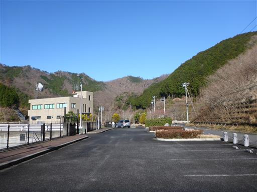
堤高56mとそこそこ立派なダムだ。
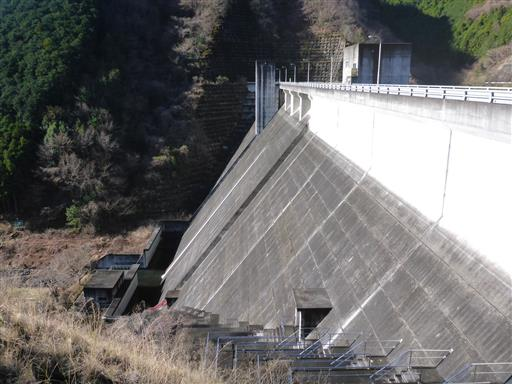
一方、ダム湖の方は比較的小振りだ。
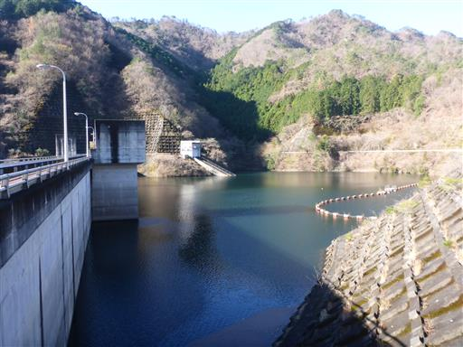
ダム湖沿いの車道を歩いて登山口を目指す。
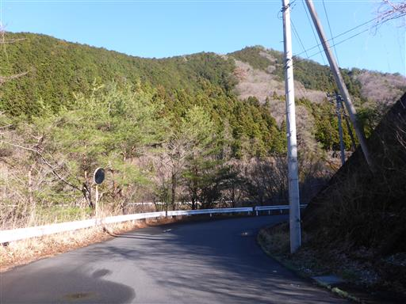
沢コースの登山道入口を見送り、尾根コースの登山口に到着する。
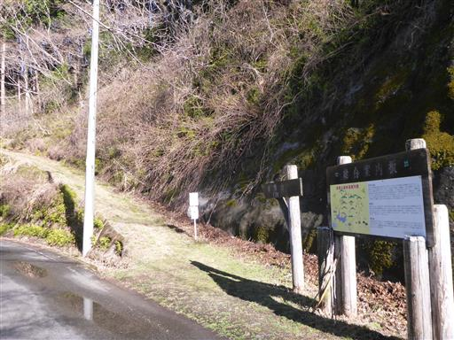
最初は杉林の中を登って行く。
息子は早速何本か棒を拾っている。
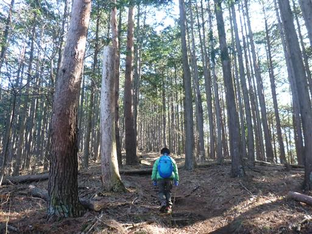
所々に雪が見られる。昨日は非常に寒く一日中雨が降っていたので、
この辺りは雪だったのだろう。
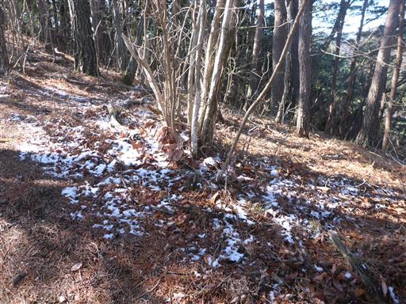
植林地帯を抜けると明るい尾根道になる。
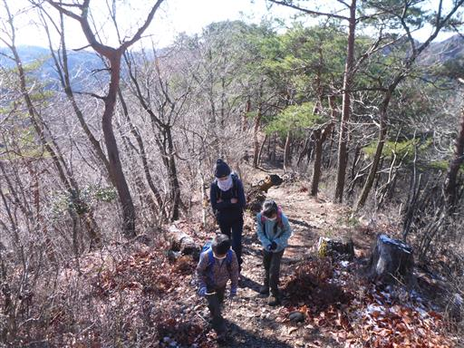
上から氷がパラパラと落ちてくる。
昨日降った雪が葉っぱに積もって、それが落ちてきているようだ。
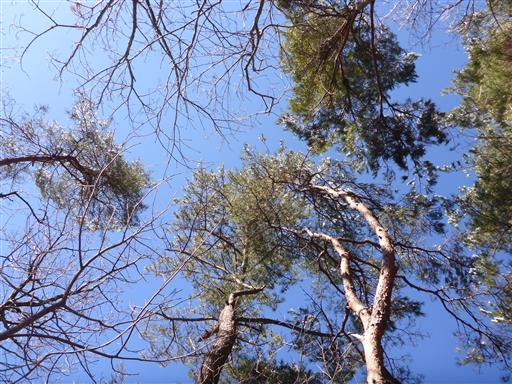
木を揺らすと氷や雪が落ちてくる。これが楽しくてしばらく氷を落として遊ぶ。
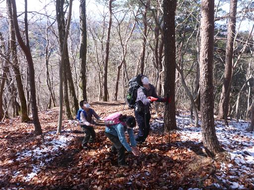
一登りで赤雪山に到着。標高621m。
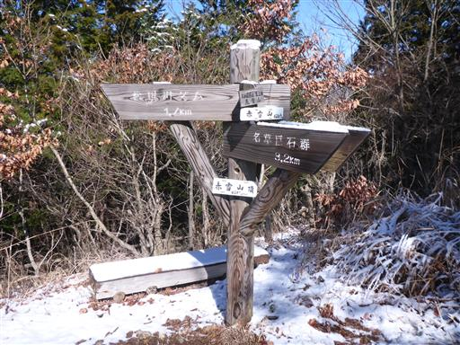
地面や草に雪が積もっている。少し雪を丸めて投げて遊ぶ。
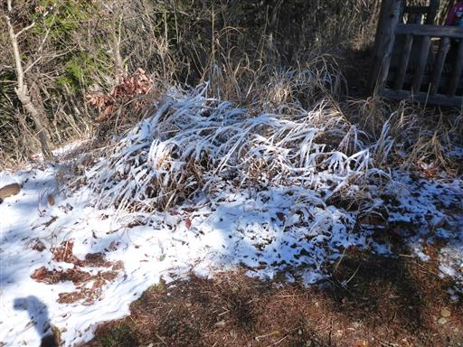
山頂からの展望。広がるのはなじみの薄い山々だ。
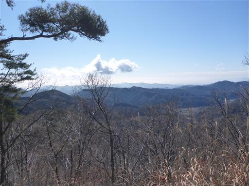
山頂にある東屋。今日はここからの行程が長いので
ここでは休憩せずにすぐに出発する。
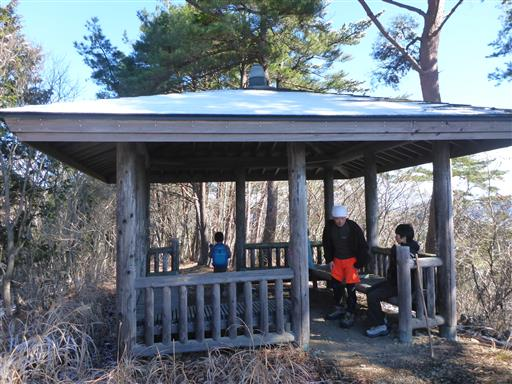
赤雪山から仙人ヶ岳までは気持ちの良い尾根道が続く。
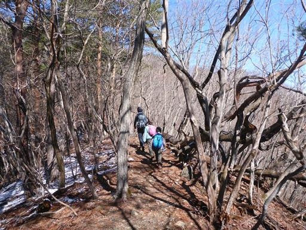
ところどころ雪が積もっている。
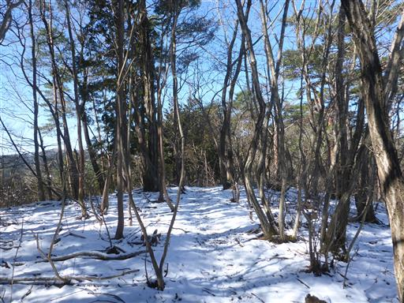
何度もアップダウンを繰り返す尾根道。
このアップダウンが結構急斜面で体力的には厳しい道だ。
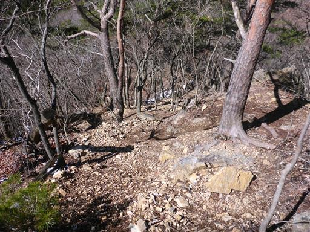
遠くに薄ら白い山脈が見える。足尾山塊の辺りだろうか？
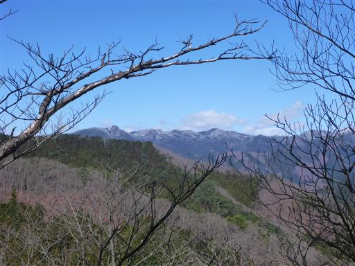
アップダウンが続く。息子はお疲れの様子でペースが大きく落ちる。

登りも下りも長くは無いのだが、岩がちな地形で急斜面が多い。
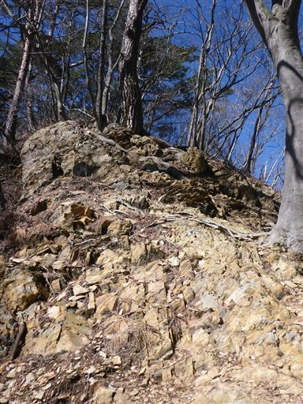
鉄板に穴を開けて文字が書かれた標識。
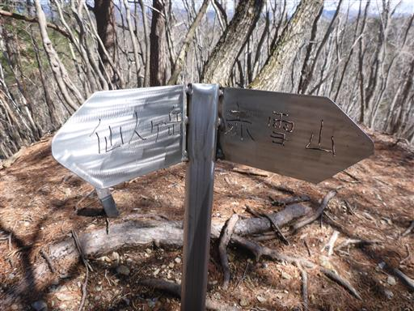
小さな祠がある。だいぶ仙人ヶ岳が近づいてきた。
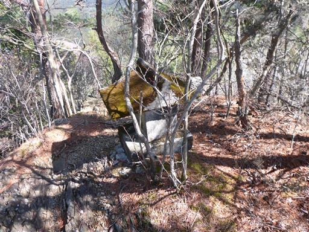
自分一人だけピークを踏んで、他3人はピークを踏まず巻道を選択。
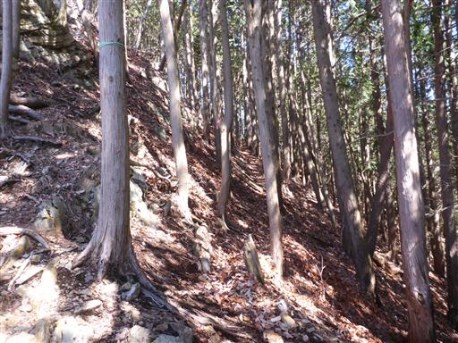
木の根に捕まり登る。巻道を通ったあたりから再び息子のペースが上がってくる。

尾根の上に横たわる大岩。
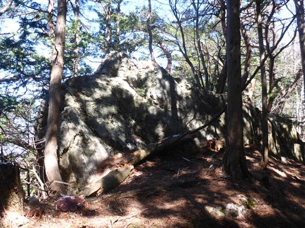
木の根を押さえつける木の根を押さえつける木の根を息子が発見。
登山道を見ればどこもこのような感じだが、
改めて眺めてみると、色んな樹種の木の根が複雑に絡まりあっている。
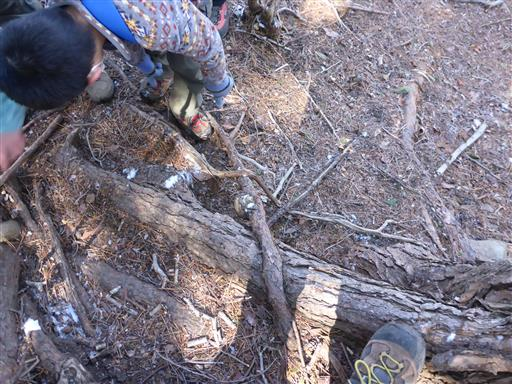
最後の登り。非常に滑りやすい場所でトラロープに捕まって登る。
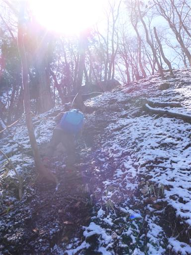
仙人ヶ岳の手前のピークに着いたら、そこからは山頂まで緩やかな尾根道を歩くのみだ。
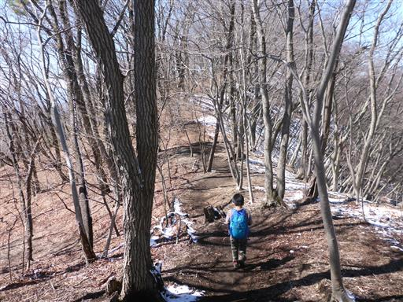
山頂が見えたら走り出す。昔はよく走り出していたが、
最近はこのような事をするのも少なくなってきた。
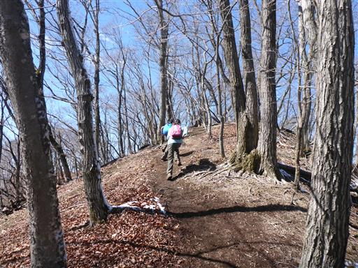
仙人ヶ岳山頂に到着。標高663m。
子供達は虫を見つけたようだ。
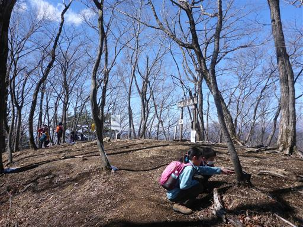
山頂からの展望はほとんどない。
木の向こう側に赤城山のシルエットが見える程度だ。
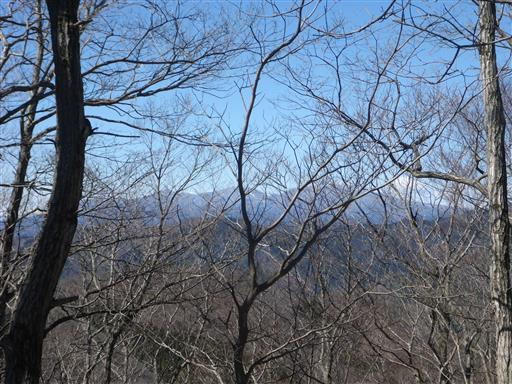
立派な山頂標識。
混雑はしていないが思ったより登山者は多く、山頂はそこそこ賑わっている。
昼食をとったら下山開始だ。
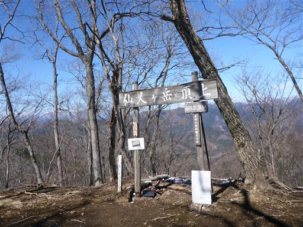
山頂からは展望が広がらなかったが、下山道途中から展望が広がる。
右手に見えるのは男体山、左の白い山は日光白根山だ。
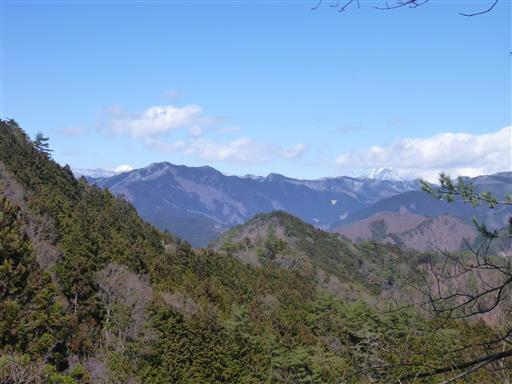
日光白根山をズーム。標高の高いこの山は一際白い。
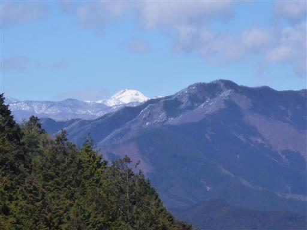
こちらは懐かしい石尊山方面。
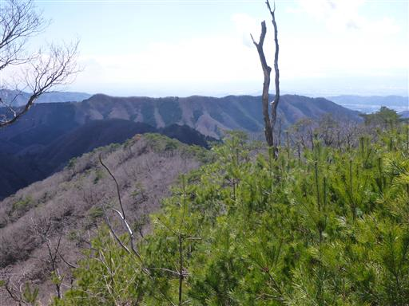
展望の良い尾根道が続く。
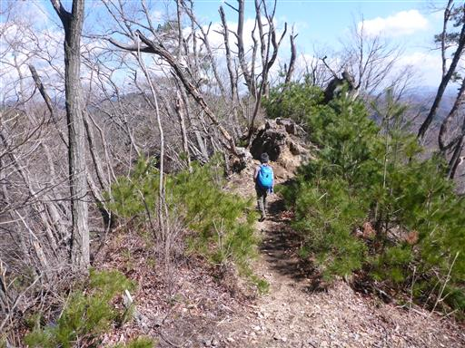
格好良い枯木。

先ほど登った赤雪山が見える。
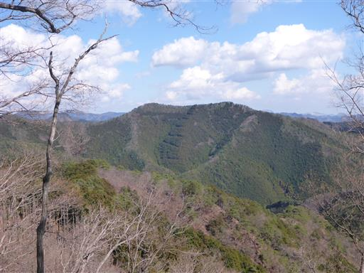
どうも枯木が多い。この辺りは山火事があったようだ。
帰って調べたら2014年に大規模な山火事が発生していた。
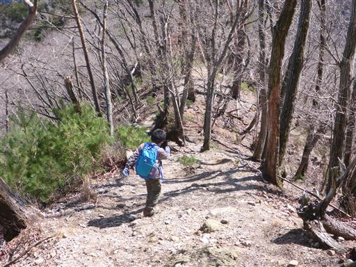
松の幼木。10年前に登ってから、山火事がありそしてここまで植生が回復している。
10年という歳月は長い。
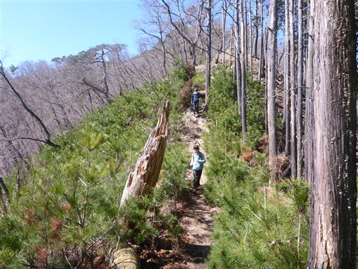
知ノ岳に到着。この先の分岐点で、以前歩いた道と分かれ
松田川ダムに続く下山道に入って行く。
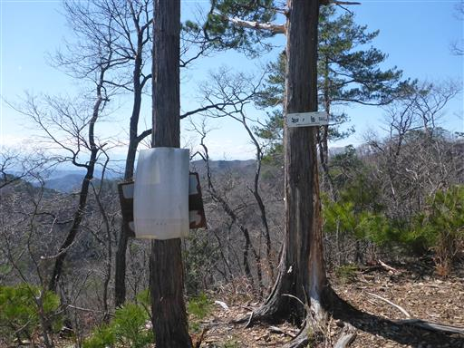
眼下にはこれから向かう松田川ダムが見えている。
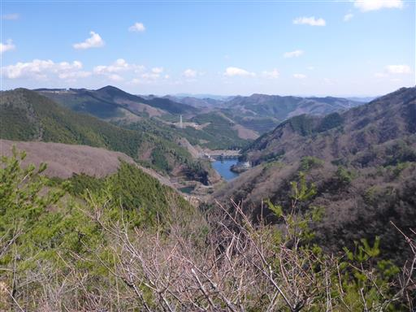
縞々模様の岩。この辺りはどのような地質なのだろうか？

この下山道は急斜面が続く。
トラロープに捕まりながら下って行く。
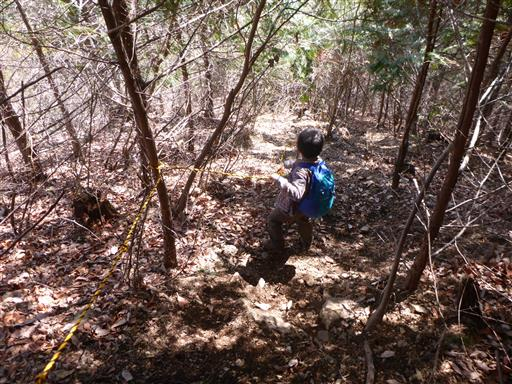
急斜面を下る息子を撮影していたら娘が嫉妬したため先頭交代。
邪魔になるトラロープを潜って下山していく。
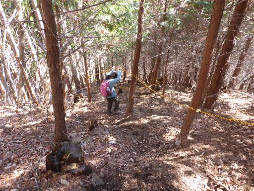
下りきると幅の広い道になる。
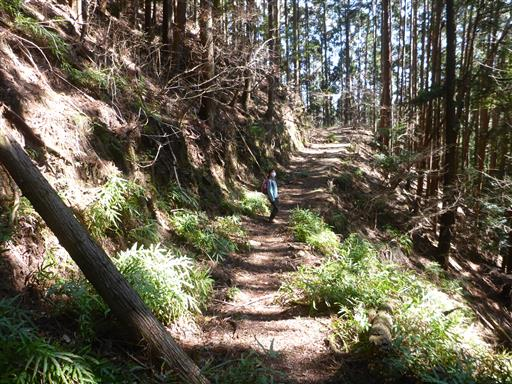
小さな堰堤。
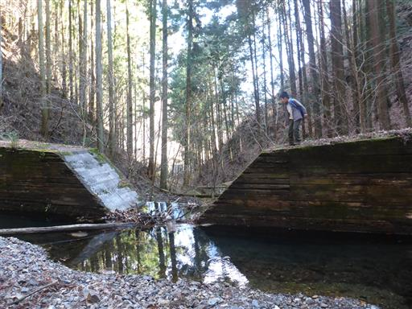
キャンプ場に下山する。
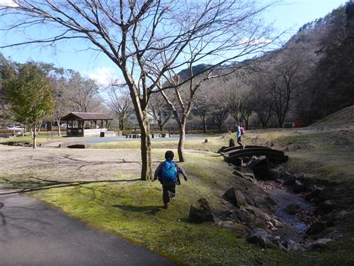
芝生が広がる快適そうなテントサイトだが鹿の糞が多いのが玉に瑕。
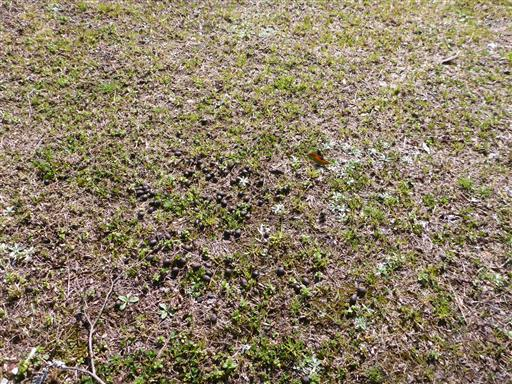
キャンプ場は閉鎖されているが、駐車場には車が多く停まっている。
簡易トイレしかないが、こちらに停めた方が歩く距離は減り若干楽だ。
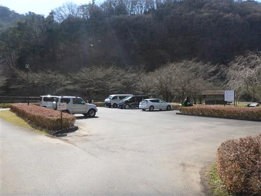
展望台があったので登ってみる。
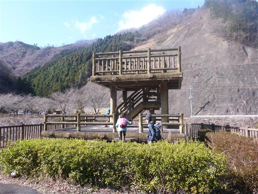
展望台から望むまつだ湖。湖面が光を反射して美しい。
湖畔を歩いて駐車場まで戻る。
赤雪山から仙人ヶ岳は気持ちの良い尾根道で良いコースだった。
程よい長さのコースだったが、息子は最近機嫌が悪く、なかなか足が前に出なかった。
小学校に入る前で精神が不安定なのかもしれない。
帰りは東北道も首都高も、渋滞こそなかったが交通量が多く
極端な自粛モードには入っていないようだった。
我が家は当分の間マイナー山行を続けることになりそうだ。
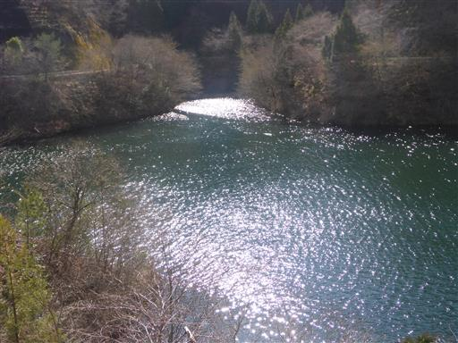